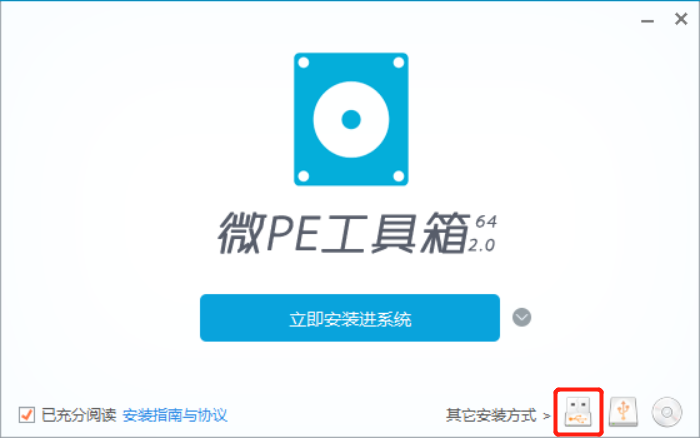
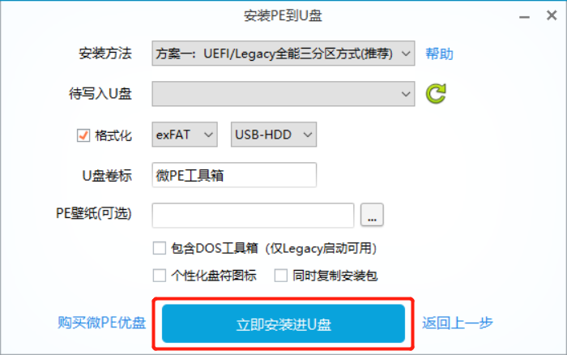

| author： | QINBINGJIA |
| time： | 2019.03 |
比较简便的方法：下载微PE工具箱，双击打开，注意接下来选择安装PE到U盘如下图所示，修改好所需设置后选择立即安装入U盘。
 
在安装好PE系统后，将系统ISO文件复制到U盘指定文件夹即可。
2019.03.21
问题描述：WIN7下打开某软件时软件界面的出现乱码，并且弹出同样乱码的系统对话框。尝试卸载软件并重新安装无效。通过查阅资料判断可能是系统的语言设置出现了问题，重新设置后问题得到了解决。
解决方法：控制面板-区域和语言-管理-（非Unicode程序的语言）更改系统区域设置-修改成英语（美国）-重启-再次修改成中文（简体，中国）-重启-完成。
2019.03.28
问题描述：WINXP下登录校内info和校园邮箱时异常，选择IE和360登录都出现同样的情况。访问其他网站发现正常，并且排除浏览器禁用第三方cookie的情况。考虑到其他电脑访问时协议为http而在该电脑访问时自动跳转到https，认为是网站不支持https协议但浏览器自动跳转造成的。
解决方法：在360浏览器中将兼容模式访问改成极速模式访问即可。
2019.07.XX
问题描述：双硬盘的分区格式、WIN10所在盘、启动模式等均对安装Ubuntu是能否检测到WIN10盘及其启动有影响。
解决方法：调整分区格式或者改变安装策略，具体内容查看以下blog：在win10下安装ubuntu18.04的一些心得体会（适合双硬盘：固态（win10）+机械（ubuntu18.04）），详细列举了多种情况及对应的解决方法。